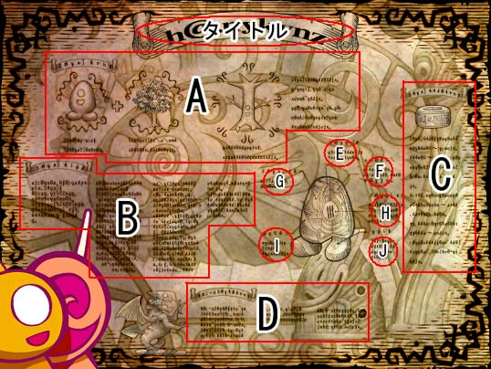
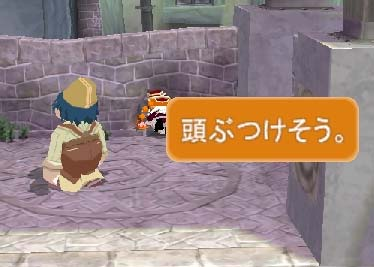

| 概要 | 情報 | ボス戦 |
| 攻略チャート | ステージ一覧 | 敵キャラ一覧 |
| アイテム一覧 | 行動パターン | GURUMIN 攻略へ |
| 最高ランク 最高ランクは「S+++」みたいです。 どのようにすれば出せるかといえば、マップ上の規定の柱、 つぼなどをすべて壊し、宝箱を一通り開き、すべての敵を倒し、 なおかつタイムがよければS+++となります。 しかし、以前にS以上、S+++未満を持っている場合は、ゴール ドメダルは手に入りません。 管理人はセンチホールを45秒で攻略して唯一S+++をもらって います。 |
| ホッカーゲームのバグ ゲーム中第1回目のキックオフのときにパリンが動かないと、 ポコもチャッキーもまったく動きません。 |
| 必勝 眠くなる攻撃返し ぐるみんの秘密 (タイトル) ファントムの秘密 (A部分) ファントムの基本例はエッグタイプです。 エッグタイプにはいろいろなものと融合することができます。木と融合したら木になり、魚と融合したら魚になります。 ファントムには文化があります。基本的には粘土を主体としてものを作ります。ただ粘土で形を作るだけでなく複雑な機械や建物も造ってしまいます。 ファントムの歴史 (B部分) 今現在、オバケたちの世界にいるファントムはおよそ三年前にやってきた、異世界の存在です。ファントム達はエッグプラント大空洞に拠をかまえ、王国の再 建を図りました。 従来から非常に好戦的なファントム達はエッグプラント大空洞を拠点に未知の世界を一挙に制圧しつつあります。オバケ達の世界にくる依然、ファントム達は グレートファングの大穴の奥、次元の狭間を気の遠くなるほどの時間さまよっていました。 なぜこのような旅をすることになったか、それはファントム王国の滅亡に端を発します。一昔前、ファントム王国は一匹の魔竜トカロンの驚異にさらされてい ました。トカロンにファントム王国は一夜にして崩壊させられ、その驚異から逃れるため、一部のファントム達がグレートファングに飛び込み、旅をすることに なったのです。 その後、トカロンはオバケ達の世界をおそいましたが、人間界からやってきた子供、ハイパボリックの手により、封印されました。人間界の子供にはオバケ達 の数十倍の力が備わり、ありとあらゆる驚異を退ける力があると伝えられます。これは、空想の力がそのまま力となる、この世界の特性によるものと考えられま す。オバケ達の空想力は世界を形作り、人間の子供の空想力となって現れるのです。 ファントム王子の秘密 (C部分) ファントム王子は代々黄金の腕輪を付けています。この腕輪を身につけると、第一代のファントム王、ブラックボイルの姿へと変身します。 これにより、偉大な第一大王の英知と力を授かることができるのです。かつ、王の威厳が永劫に続くことを意味します。現在の王は第百十三代目、ブラックビー ンになります。 眼球 (E部分) 絶えず発光しています。夜道も安心です。 ミディクロ (F部分) キョウセイ帯です。フォースを感じることができます。 ファントム膜 (G部分) 意志により伸縮自在です ファントム核 (H部分) 染色体があります。分裂することで個体を増やすことができます。 文様 (I部分) みんな同じに見えますが、個体差があります。 筋肉 (J部分) 周りにより堅い芯があり、ここを伸縮させて動きます グレートファングの秘密 (D部分) グレートファングは世界を貫く大穴と呼ばれ、階層上につながっている我々の世界をつなぐゲートです。 ファントム王国、人間界、オバケの国の他にも地の世界、空の国、巨人の国、天使界、地獄界など様々な世界とつながっています。  |
| もしかして ハイパボリックは、パリンの力量を試すために白金のメダルを探すように 言ったのかもしれませんね。もしくは、伝説のドリルの力を最大限に利用で きる状態にし、オバケの世界に起こっている驚異に対抗できるようにするた めに。 |
| こだわっていますね  町の壁に開いた穴の中にいるときに、装備品を変更しようとすると表示さ れます。Falcomのデバッカーは百戦錬磨・・・。 |
| 概要 | 情報 | ボス戦 |
| 攻略チャート | ステージ一覧 | 敵キャラ一覧 |
| アイテム一覧 | 行動パターン | GURUMIN 攻略へ |